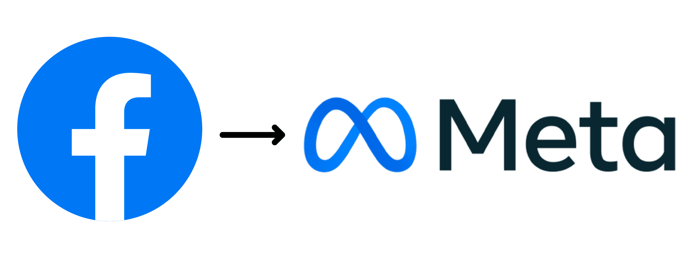

Top 5s Technology company in the world.

#1-Apple
Apple Inc. is an American multinational technology company headquartered in Cupertino, California.
Apple was founded as Apple Computer Company on April 1, 1976, by Steve Wozniak, Steve Jobs and Ronald Wayne to develop and sell Wozniak's Apple I personal computer. It was incorporated by Jobs and Wozniak as Apple Computer, Inc. in 1977. The company's second computer, the Apple II, became a best seller and one of the first mass-produced microcomputers. Apple went public in 1980 to instant financial success. The company developed computers featuring innovative graphical user interfaces, including the 1984 original Macintosh, announced that year in a critically acclaimed advertisement. By 1985, the high cost of its products, and power struggles between executives, caused problems. Wozniak stepped back from Apple amicably and pursued other ventures, while Jobs resigned bitterly and founded NeXT, taking some Apple employees with him.As the market for personal computers expanded and evolved throughout the 1990s, Apple lost considerable market share to the lower-priced duopoly of the Microsoft Windows operating system on Intel-powered PC clones (also known as "Wintel"). In 1997, weeks away from bankruptcy, the company bought NeXT to resolve Apple's unsuccessful operating system strategy and entice Jobs back to the company. Over the next decade, Jobs guided Apple back to profitability through a number of tactics including introducing the iMac, iPod, iPhone and iPad to critical acclaim, launching the "Think different" campaign and other memorable advertising campaigns, opening the Apple Store retail chain, and acquiring numerous companies to broaden the company's product portfolio. When Jobs resigned in 2011 for health reasons, and died two months later, he was succeeded as CEO by Tim Cook.
Apple became the first publicly traded U.S. company to be valued at over $1 trillion in August 2018, then $2 trillion in August 2020, and $3 trillion in January 2022. As of January 2023, it was valued at around $2.2 trillion. The company receives criticism regarding the labor practices of its contractors, its environmental practices, and its business ethics, including anti-competitive practices and materials sourcing. Nevertheless, the company has a large following and enjoys a high level of brand loyalty. It is ranked as one of the world's most valuable brands.

#2-Alphabet
Alphabet Inc. is an American multinational technology conglomerate holding company headquartered in Mountain View, California.
"GOOGL" redirect here. For the company formerly traded under these ticker symbols, see Google.Alphabet Inc. is an American multinational technology conglomerate holding company headquartered in Mountain View, California. It was created through a restructuring of Google on October 2, 2015,[2] and became the parent company of Google and several former Google subsidiaries.[3][4][5] Alphabet is the world's third-largest technology company by revenue and one of the world's most valuable companies.[6][7] It is one of the Big Five American information technology companies, alongside Amazon, Apple, Meta, and Microsoft.
The establishment of Alphabet Inc. was prompted by a desire to make the core Google business "cleaner and more accountable" while allowing greater autonomy to group companies that operate in businesses other than Internet services.[4][8] Founders Larry Page and Sergey Brin announced their resignation from their executive posts in December 2019, with the CEO role to be filled by Sundar Pichai, also the CEO of Google. Page and Brin remain employees, board members, and controlling shareholders of Alphabet Inc.
#3-Samsung Group
Samsung, South Korean company that is one of the world's largest producers of electronic devices.
Samsung was founded as a grocery trading store on March 1, 1938, by Lee Byung-Chull. He started his business in Taegu, Korea, trading noodles and other goods produced in and around the city and exporting them to China and its provinces. (The company name, Samsung, came from the Korean for “three stars.”) After the Korean War, Lee expanded his business into textiles and opened the largest woolen mill in Korea. He focused heavily on industrialization with the goal of helping his country redevelop itself after the war. During that period his business benefited from the new protectionist policies adopted by the Korean government, whose aim was to help large domestic conglomerates (chaebol) by shielding them from competition and providing them easy financing. In the late 1950s the company acquired three of Korea’s largest commercial banks as well as an insurance company and firms that made cement and fertilizer. Samsung in the 1960s acquired more insurance companies as well as an oil refinery, a nylon company, and a department store.During the 1970s the company expanded its textile-manufacturing processes to cover the full line of production—from raw materials all the way to the end product—to better compete in the textile industry. New subsidiaries such as Samsung Heavy Industries, Samsung Shipbuilding, and Samsung Precision Company (Samsung Techwin) were established. Also, during the same period, the company started to invest in the heavy, chemical, and petrochemical industries, providing the company a promising growth path.
Samsung Electronics Co. produces a wide variety of electronics, including:
- Computer peripherals
- Mobile communications products
- Cable televisions
- Household appliances
- Cameras
- Medical devices
- Device solutions for businesses.
#4-Microsoft
Microsoft is the largest vendor of computer software in the world.
Microsoft Corporation is an American multinational technology corporation headquartered in Redmond, Washington. Microsoft's best-known software products are the Windows line of operating systems, the Microsoft Office suite, and the Internet Explorer and Edge web browsers. Its flagship hardware products are the Xbox video game consoles and the Microsoft Surface lineup of touchscreen personal computers. Microsoft ranked No. 14 in the 2022 Fortune 500 rankings of the largest United States corporations by total revenue;[2] it was the world's largest software maker by revenue as of 2022. It is considered as one of the Big Five American information technology companies, alongside Alphabet (parent company of Google), Amazon, Apple, and Meta (formerly Facebook).Microsoft was founded by Bill Gates and Paul Allen on April 4, 1975, to develop and sell BASIC interpreters for the Altair 8800. It rose to dominate the personal computer operating system market with MS-DOS in the mid-1980s, followed by Windows. The company's 1986 initial public offering (IPO), and subsequent rise in its share price, created three billionaires and an estimated 12,000 millionaires among Microsoft employees. Since the 1990s, it has increasingly diversified from the operating system market and has made a number of corporate acquisitions, their largest being the acquisition of LinkedIn for $26.2 billion in December 2016,[3] followed by their acquisition of Skype Technologies for $8.5 billion in May 2011. As of 2015, Microsoft is market-dominant in the IBM PC compatible operating system market and the office software suite market, although it has lost the majority of the overall operating system market to Android.[5] The company also produces a wide range of other consumer and enterprise software for desktops, laptops, tabs, gadgets, and servers, including Internet search (with Bing), the digital services market (through MSN), mixed reality (HoloLens), cloud computing (Azure), and software development (Visual Studio).
Steve Ballmer replaced Gates as CEO in 2000, and later envisioned a "devices and services" strategy.[6] This unfolded with Microsoft acquiring Danger Inc. in 2008,[7] entering the personal computer production market for the first time in June 2012 with the launch of the Microsoft Surface line of tablet computers, and later forming Microsoft Mobile through the acquisition of Nokia's devices and services division. Since Satya Nadella took over as CEO in 2014, the company has scaled back on hardware and has instead focused on cloud computing, a move that helped the company's shares reach its highest value.
Earlier dethroned by Apple in 2010, in 2018 Microsoft reclaimed its position as the most valuable publicly traded company in the world.[10] In April 2019, Microsoft reached the trillion-dollar market cap, becoming the third U.S. public company to be valued at over $1 trillion after Apple and Amazon respectively. As of 2022, Microsoft has the fourth-highest global brand valuation.
Microsoft has been criticized for its monopolistic practices and the company's software has been criticized for problems with ease of use, robustness, and security.

Meta's products and services include Facebook, Instagram, WhatsApp, Messenger, and Meta Quest. It has acquired Oculus, Mapillary, CTRL-Labs, Kustomer, and has a 9.99% stake in Jio Platforms.[20] In 2021, the company generated 97.5% of its revenue from the sale of advertising.
On October 28, 2021, the parent company of Facebook changed its name from Facebook, Inc., to Meta Platforms, Inc., to "reflect its focus on building the metaverse".[22] According to Meta, the "metaverse" refers to the integrated environment that links all of the company's products and services
#5-Meta
"Facebook (company)" redirects here. For the social media platform, see Facebook. For other uses, see Meta (disambiguation).
Meta Platforms, Inc.,[14][15] doing business as Meta[16] and formerly named Facebook, Inc., and TheFacebook, Inc.,[17] is an American multinational technology conglomerate based in Menlo Park, California. The company owns Facebook, Instagram, and WhatsApp, among other products and services.[18] Meta is one of the world's most valuable companies and among the ten largest publicly traded corporations in the United States.[19] It is considered one of the Big Five American information technology companies, alongside Alphabet (Google), Amazon, Apple, and Microsoft.Meta's products and services include Facebook, Instagram, WhatsApp, Messenger, and Meta Quest. It has acquired Oculus, Mapillary, CTRL-Labs, Kustomer, and has a 9.99% stake in Jio Platforms.[20] In 2021, the company generated 97.5% of its revenue from the sale of advertising.
On October 28, 2021, the parent company of Facebook changed its name from Facebook, Inc., to Meta Platforms, Inc., to "reflect its focus on building the metaverse".[22] According to Meta, the "metaverse" refers to the integrated environment that links all of the company's products and services